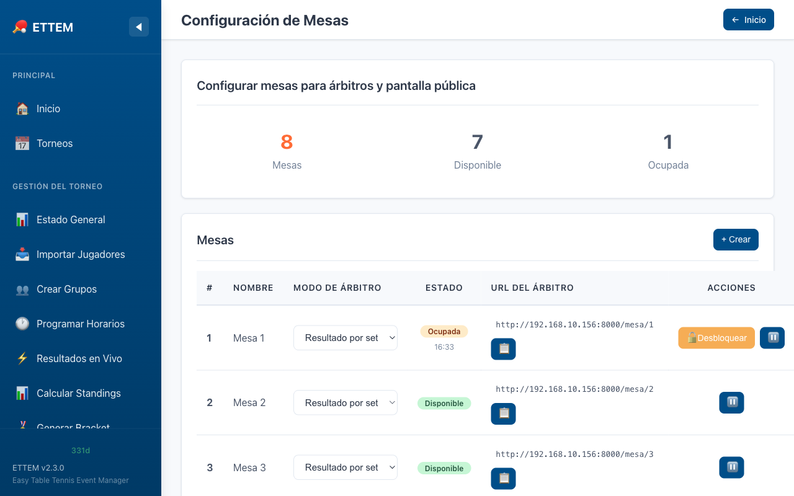
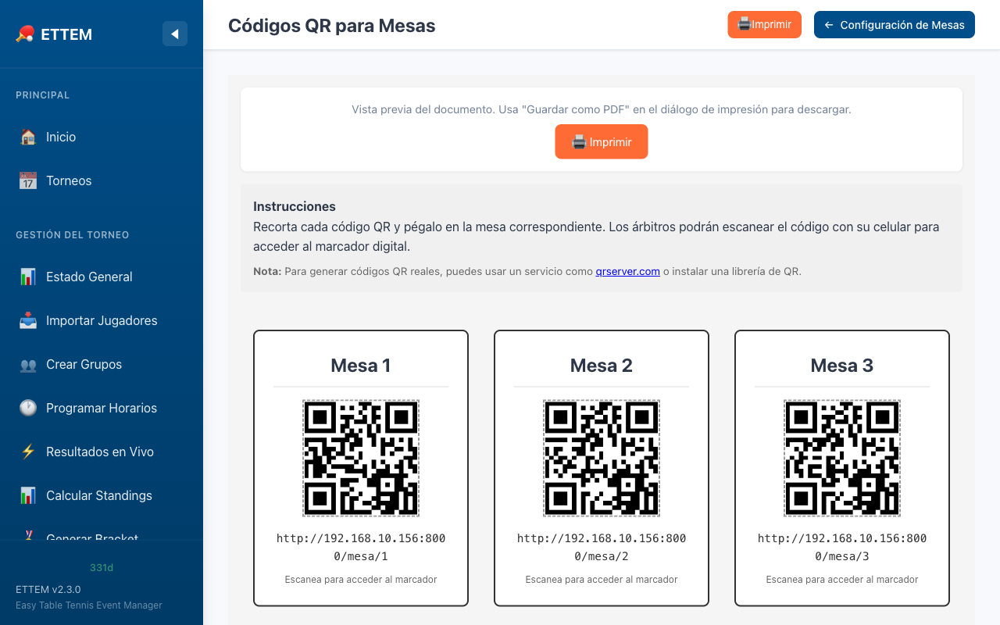
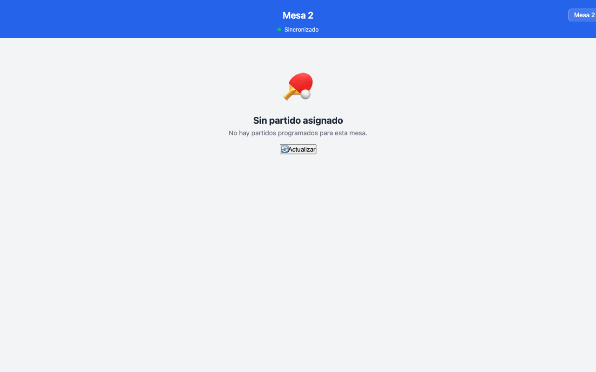

Marcador de Árbitro
Marcador móvil para árbitros con códigos QR por mesa — acceso desde cualquier celular en la red local.
Descripción General
El Marcador de Árbitro permite que cada árbitro ingrese puntos y resultados directamente desde su teléfono celular, sin necesidad de ir a la computadora principal. Cada mesa tiene su propio código QR que el árbitro escanea para acceder al marcador de esa mesa específica.
Paso 1 — Configurar las Mesas para Árbitros
Antes de distribuir los códigos QR, inicializa las mesas en el panel de ETTEM:
- Ve a Administración → Configuración de Mesas.
-
Selecciona el modo de marcador para cada mesa:
- Punto a punto: el árbitro presiona un botón por cada punto ganado. El marcador muestra el puntaje en tiempo real. Ideal para partidos con árbitro dedicado.
- Resultado por set: el árbitro ingresa el marcador final de cada set (p. ej. 11–7). Ideal cuando no hay árbitro dedicado y los propios jugadores reportan el resultado.
- Confirma la inicialización. Cada mesa queda lista para recibir una conexión de dispositivo.

Paso 2 — Códigos QR por Mesa
ETTEM genera automáticamente un código QR único para cada mesa. El QR contiene la URL local del marcador de esa mesa. Para distribuirlos:
- Ve a Administración → Códigos QR de Mesas.
- Verás un QR por cada mesa configurada.
- Haz clic en Imprimir QR para imprimir una hoja con todos los códigos QR, una por mesa. Coloca cada impreso junto a la mesa correspondiente.

Paso 3 — Marcador Móvil del Árbitro
Al escanear el QR con la cámara del celular, el árbitro accede al marcador móvil de su mesa. Desde ahí:
Seleccionar el partido
Si la mesa tiene un partido asignado en el Scheduler, aparece automáticamente. De lo contrario, el árbitro puede buscar y seleccionar el partido manualmente de la lista de partidos pendientes.
Ingresar puntos (modo punto a punto)
- Dos grandes botones: + para cada jugador (o equipo).
- El marcador se actualiza instantáneamente en pantalla.
- Deshacer: un botón de deshacer permite corregir el último punto ingresado en caso de error.
- Cambio de lado: al finalizar cada set, ETTEM indica cuándo los jugadores deben cambiar de lado. Un botón de intercambiar lados permite actualizar el marcador para reflejar el cambio.
- ETTEM detecta automáticamente cuando un set termina (11 puntos con diferencia de 2, o la prórroga) y pasa al siguiente set.
- Al completar todos los sets del partido, el resultado se guarda automáticamente.
Ingresar resultado por set
- El árbitro ingresa el marcador final de cada set mediante campos numéricos.
- ETTEM valida que los marcadores sean válidos según las reglas ITTF.
- Al completar todos los sets, el resultado se guarda y el partido queda cerrado.

Walkover desde el Marcador
Si un jugador no se presenta o debe retirarse, el árbitro puede registrar un walkover (W.O.) directamente desde el marcador móvil:
- Abre el partido en el marcador.
- Haz clic en el menú de opciones (icono de tres puntos o botón “Opciones”).
- Selecciona Walkover e indica qué jugador no se presentó.
- El partido queda registrado como W.O. y el resultado se refleja en los standings.
Bloqueo de Mesa
Para evitar que dos dispositivos controlen la misma mesa simultáneamente, ETTEM implementa un sistema de bloqueo de mesa:
- Cuando un dispositivo se conecta a una mesa mediante el QR, esa mesa queda bloqueada para ese dispositivo.
- Si un segundo dispositivo intenta acceder a la misma mesa, verá un aviso de que la mesa ya está en uso.
- Desbloqueo de administrador: desde el panel de administración, cualquier mesa puede desbloquearse manualmente en caso de que el dispositivo original se haya desconectado o el árbitro haya cambiado.